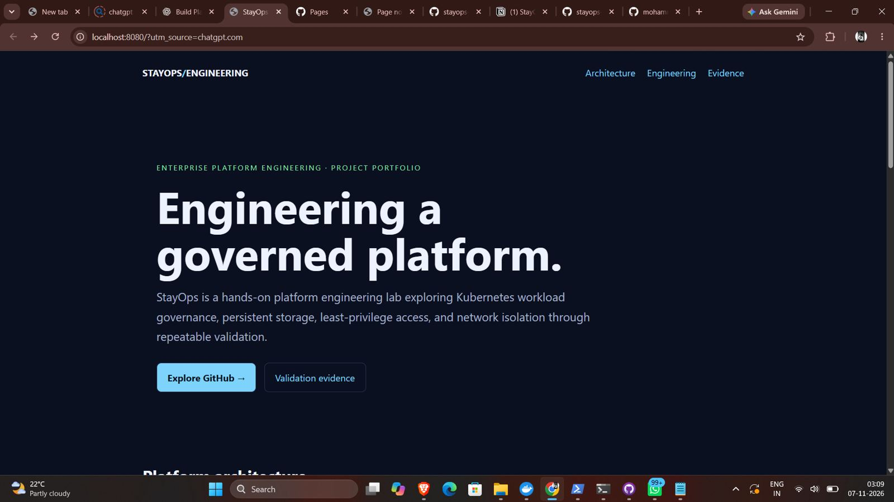

Workload governance
CPU and memory requests/limits, readiness and liveness probes, and environment-specific NGINX workloads.
✓ Development and staging workloads healthy
StayOps is an infrastructure engineering lab built around a fictional hospitality platform scenario—not a hotel booking application. It explores repeatable workload delivery, operational governance, persistent storage, least-privilege access, and network isolation.
Windows · WSL2 · Ubuntu · Docker Desktop
kind · Development · Staging
Resources · Probes · PVC · RBAC
CPU and memory requests/limits, readiness and liveness probes, and environment-specific NGINX workloads.
Dynamic PVC provisioning, mount/write checks, and persistence marker verified after deleting and recreating test pods.
Namespace-scoped auditor RoleBindings and restricted runtime service accounts, with positive and negative authorization checks.
Calico-enforced ingress default-deny with a narrow client-to-web TCP/80 allow rule.
GitHub Actions validates YAML and renders Kustomize base, development, and staging configurations.
Architecture decision record, requirements traceability, workload onboarding standard, and evidence ledger.
Ready after workload governance changes.
Ready after workload governance changes.
Development and staging claims reached Bound.
NGINX remained reachable after storage tests.
Selected terminal and GitHub screenshots captured during implementation. Earlier CI failures are shown as debugging history, followed by the later successful run; they are not presented as passing builds.



Detailed evidence ledger → · Kubernetes manifests → · Validation scripts →

Platform Engineer · Linux · Kubernetes · OpenShift
Bangalore, Karnataka, India
mohammeddahudd@gmail.com
+91-6362513206
Resume PDF and portrait asset are linked by filename; upload them into assets/ to activate these links.
Computer Science & Engineering (Cyber Security) graduate building hands-on expertise across Linux, Kubernetes, Red Hat OpenShift, containers, networking, and enterprise infrastructure. Lab work includes workload governance, persistent storage, least-privilege RBAC, NetworkPolicy enforcement, CI validation, and disconnected OpenShift workflows.
Linux: filesystems, permissions, systemd, SSH, DNS, networking, storage, firewalls
Kubernetes / OpenShift: OpenShift 4.x, SNO, Pods, Deployments, Services, Namespaces, ConfigMaps, Secrets, PV/PVC, RBAC, NetworkPolicy, oc, kubectl
Containers: Docker, Podman, CRI-O, containerd, images, Dockerfiles, registries
Infrastructure & tools: Proxmox, HAProxy, Git, GitHub Actions, YAML, Bash, Kustomize, kind, Calico, Python
StayOps — Enterprise Platform Engineering Lab (Oct 2025–Jan 2026)
Multi-node kind lab; NGINX resource governance and probes; PVC persistence validation; RBAC positive/negative tests; Calico ingress NetworkPolicy; GitHub Actions YAML/Kustomize CI; evidence documentation and portfolio.
OpenShift & Kubernetes Lab: OpenShift 4.x/SNO administration, workloads, storage, ingress, DNS, troubleshooting.
Disconnected OpenShift Lab: offline image mirroring, image archives, SHA-256 validation, SeaweedFS and network troubleshooting.
Linux & Infrastructure Lab: Linux administration, command-line diagnostics, Proxmox virtualization.
IBM Maximo Application Suite Lab: MAS architecture and OpenShift requirements, Maximo Manage/Aviation concepts.
Face Emotion Detection: CNN/OpenCV real-time detection (87% accuracy); Python, Deep Learning, React.js.
Heart Disease Prediction: Logistic Regression, Decision Tree, Random Forest (80% accuracy); Python, Pandas, Scikit-learn.
Trava Stays, Bangalore — Airbnb Co-Host / Operations Assistant Manager (Dec 2025–Jun 2026)
Coordinated operations across 18+ properties: bookings, guest communication, check-ins, housekeeping, maintenance.
Quess Corp (Axis Bank), Bangalore — Relationship Officer (Sep 2022–Nov 2023)
Managed customer relationships, resolved banking queries, and supported financial product selection.
B.E. Computer Science & Engineering (Cyber Security) — RNS Institute of Technology (2022–2026), CGPA 7.03/10
Diploma, Computer Science & Engineering — Anjuman-e-Islam Polytechnic (2022), CGPA 7.50/10
StayOps source repository ↗ · Evidence ledger ↗ · Kubernetes manifests ↗ · Validation scripts ↗ · GitHub Actions ↗